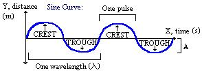

Blood and its color(s)
We, as most mammals, have red blood. This is due to the presence of iron in our blood, which when oxidize turns reddish.
But why is this iron there?
Well we all know we need oxygen in our body, that’s why we breathe, but we may not realize that most of our cells requires oxygen to live, all over the body.
In order to propagate oxygen to our body we need hemoglobin, it will provides a mean to transport oxygen throughout our tissues so our cells can stay alive.
So there is iron, and there is oxygen, which lead to redox, hence the red color.
But my veins are blue
Yes, we do see them blue, but its not blue. Some people will tell you otherwise, but blood is never blue in human. Why we do perceive the veins blue does seem to be a question without perfectly proven answer.
One of the most likely reason is the light and its energy that the blood and skin will reflect and absorb. If you want to know more about this particular topic, I invite you to read this article which covers the topic pretty well, while providing more interesting links on the subject.
Why is this post titled color(s)?
We do have have red blood, but there are other blood colors that exists, not in humans through.
Bluish blood
Lobsters, squids and horseshoe crabs (amongst others) have a bluish blood, as their blood contains hemocyanin where we have hemoglobin, and use copper (vs iron in human) as a medium of transport.
You can have a look at pictures of horseshoe crabs and their blood, but while you’re at it read more about the use of their blood to test drugs, and how it probably saved a lot of people!
Green blood
The skink lizard have green blood. Apparently, it seems that a high level of bile molecules are present in their blood, but also in other tissues, and even in bones apparently.
More on this on National Geographic
Yellow blood
Insects such a beetles are known to have yellow colored blood. Really, pure blood should be clear in insect, they get color because of what is in it.
Insects don’t have lungs and the need to transport oxygen like us, they breathe through their skin, and for most parts, blood does not carry oxygen and therefore does not have hemoglobin on its equivalent, but it does carry nutrients and hormones, so most of the time, their blood color is related to what they have been eating.
There is a bit more in here.
Doppler Effect
Most people know about the Doppler Effect, some without knowing it, some had to go through a Doppler ultrasound, some of us even know it causes the slide of the sound in sirens passing by...
Definition: The Doppler effect (or Doppler shift), is the change in frequency of a wave (or other periodic event) for an observer moving relative to its source.
So what does that mean?
Sound and light are waves:
To perceive one of these, we need an emitter, and an observer, for the siren example, the ambulance siren is the emitter, and the microphone recording the sound, is the observer.
But as the emitter moves toward the observer, the wavelength are shortened, once the ambulance has passed the observer, it gets further away from the observer, and the wavelength is getting longer.
When the wavelength is shorter, a sound will have a higher pitch, once the wavelength gets longer, the sound will have a lower pitch, thus creating the change you can hear when the ambulance passes by.
A representation of the wave of a moving emitter:

There are a lot of usage for this effect, but 2 are more known to the public:
- Car Speed Radar
- Doppler ultrasound
So when the police measure car speed to give you a ticket, they are using the exact same principle, the radar will beam a wave at a known frequency, and receive the beam reflected by the vehicle, having its wavelength impacted by the vehicle speed, Based on the difference, the device will determine the speed.
In the case of Doppler ultrasound used in medical imaging, it is actually used to measure the flow of blood in the body.
Finally, I would add that the expansion rate of the universe, is measured using redshift which are an example of the Doppler effect.
For more examples of its usage, and more detailed explanations, don’t forget to check Wikipedia page, which is quite complete!
Human Brain and Cooking
No I’m not talking about cooking the human brain, but about the fact that humans is the only species that cooks its food. And there is a reason for that, this is what allows us be how we are. Cooked food allows an easier way to digest food, and to absorb more energy from the food than when eating it raw, so it is not only a question of taste, or killing bacterias, but it also is a way to help our digestive system get the most out of food in a shorter time.
In fact, if it was not for cooking, we would have to spend about the whole day eating raw food to have enough energy to power our brain and body. The truth is that our brain is just the same as any primate brain. The number of neurons for a brain of a given size is the same for any primate, ours is simply bigger. Note that I insisted on the primate, that is because we don’t have the biggest brain, that probably would be the whale, brain, but we do have the highest number of neurons, and that explains our cognitive abilities. It also is the most energy hungry brain, and the only way we can be a viable species is by cooking, and that is an amazing fact, that I find not known well enough.
To get more information on the subject, you can dive directly into the work of Suzana Herculano-Houzel or, for a shorter and yet very comprehensive version, watch this great TED talk she gave:
Maillard Reaction
Did you know that seared steak, bread crust, French fries and more are coming from the same exact chemical reaction? It is called the Maillard Reaction, you can read more about it on Wikipedia. It is one of the two Nonenzymatic browning, the second is the caramelization. There also are other Food Browning that may be worth a read if you are interested in the subject.
Back to the Maillard Reaction, the basic point is that amino acids and reducing sugar gets combined. Most of the time, heat is what triggers the reaction, but it can also happen without it in various cases, the more sugar and amino acids the lower the temperature required is.
One thing is for sure, in the case of meat, you will need far more than what can be achieved by water, that’s why boiled meat won’t get brown, and taste different. That is why some recipes will require you to fry meat before adding them to the stock.
Want to give it a try for yourself? You can follow the steps of this experience, it is worth a try!
Interesting for Malt lovers, this reaction is also used to prepare the malt used in whiskey and beers, that is what gives it its color. There is a very interesting article that goes in length about it if you wish to find out more.
And here is a video about Maillard Reaction and caramelization by foodsciencetv:
Welcome to The More You Know
Hello all!
The purpose of this website is to share some interesting things we can learn online, no matter the subject, if it is worth knowing, it is worth sharing.
Like Buddha said:
There is no wealth like knowledge, and no poverty like ignorance.
So I hope this will be a good place to learn and share more things along the way, let’s rock!